Inside Azure innovations with Mark Russinovich
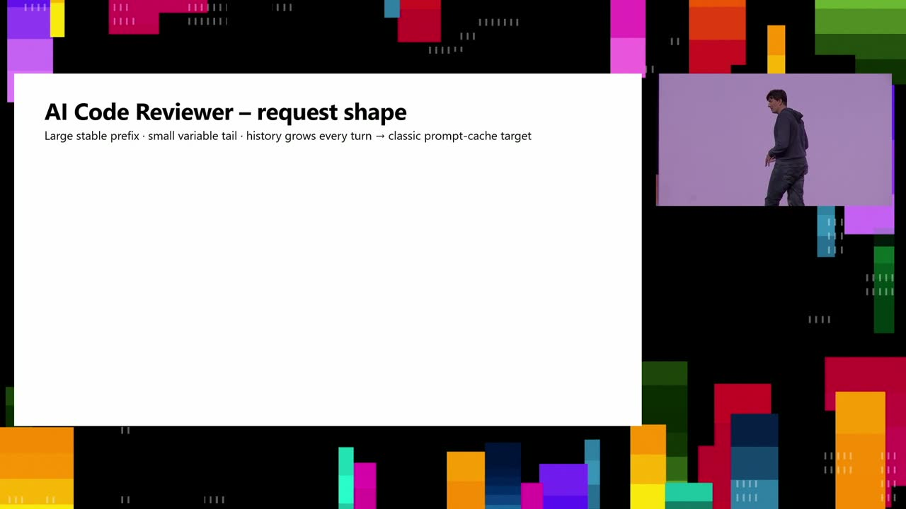
Chapters
Official description
Join Mark Russinovich, CTO, Deputy CISO, Technical Fellow of Microsoft Azure. Mark will take you on a tour of the latest innovations in Azure architecture and explain how Azure enables intelligent, modern, and innovative applications at scale in the cloud, on‑premises, and on the edge. Seating for this session is first-come, first-served. Add it to your schedule to plan your day and arrive early to secure a spot.
Summary
Overview
A deep technical tour of Azure's full-stack infrastructure innovations, spanning AI data center design, server offload hardware, networking protocols, serverless containers, inference optimization, confidential computing, and experimental optical interconnects. Mark Russinovich emphasizes that much of the work is co-designed around AI workloads and that several demos show pre-production or research-stage technology.
Key announcements
- Latest-generation Azure Boost offload card — Now deployed across 30%+ of the fleet, reaching 400 Gbps networking (up from 200), 20 GB/s remote storage, 1M remote IOPS, and 6.6M local NVMe IOPS [00:03:34
 m05s
m05s m10s
m10s p05s
p05s p10s].
p10s]. - Bare metal instances — Currently in limited access for OpenAI's use of the Fairwater data center, with a general-purpose ND144V6 offering planned for the near future [00:05:36
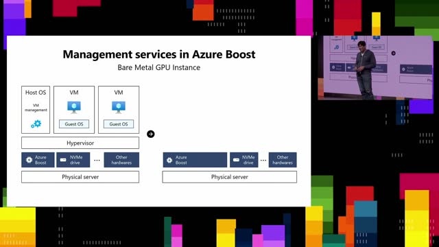
m05s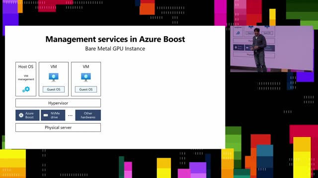
m10s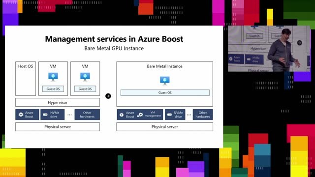
p05s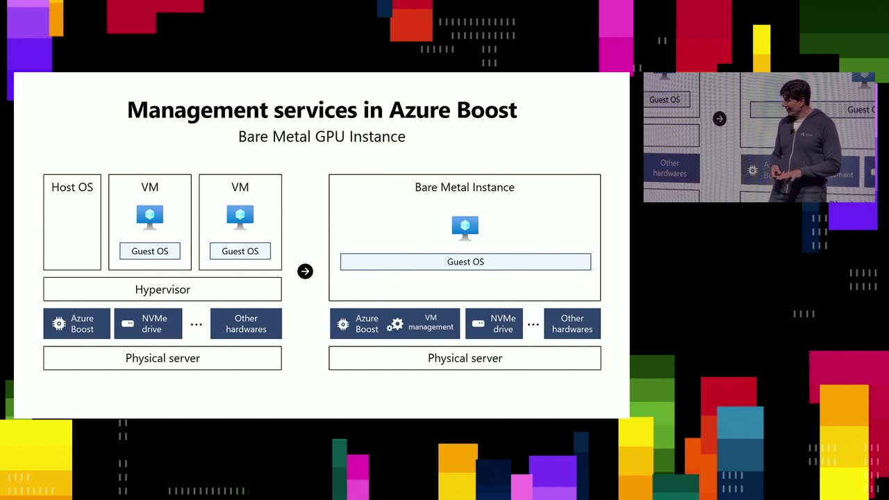
p10s]. - MRC (Multi-Path Reliable Connection) — A new Ethernet-based networking protocol co-developed with OpenAI that packet-sprays across independent "planes" to survive congestion and link failures during massive training jobs [00:07:00
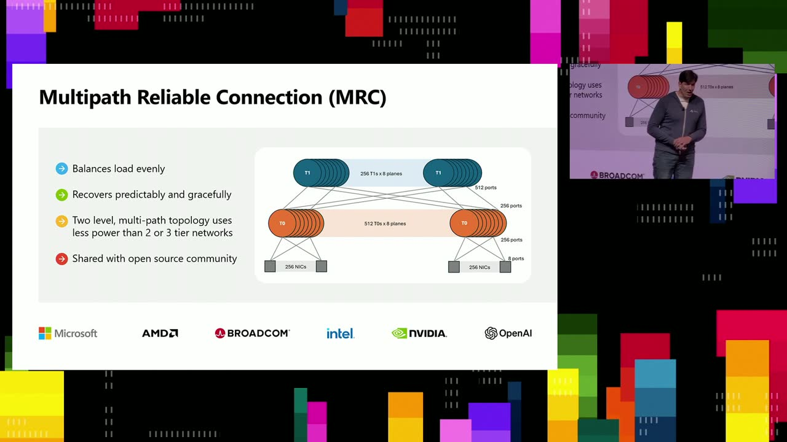
m05s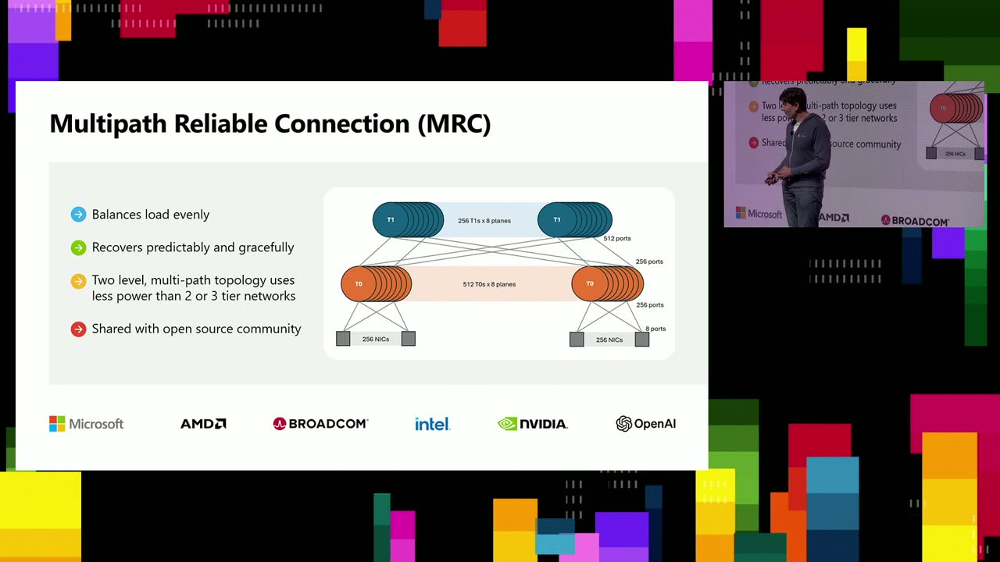
m10s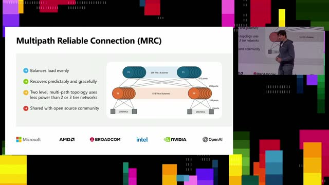
p05s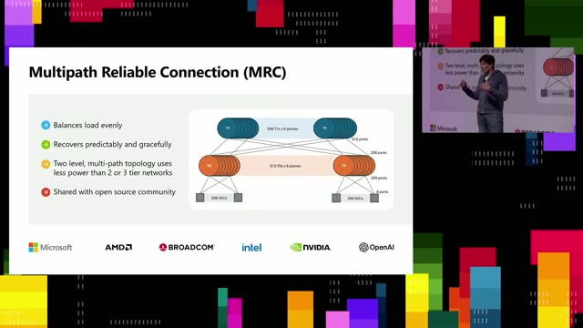
p10s]. - Guest VM-to-VM RDMA over Azure Boost — Demonstrated nearly doubling inference token throughput (3,400 to 7,637) and cutting median time-to-first-token from ~123k to ~47k ms in a disaggregated prefill/decode setup [00:11:00
 m05s
m05s m10s
m10s p05s
p05s p10s].
p10s]. - Direct virtualization for Azure Container Instances — Places Hyper-V-isolated containers directly on servers as peers to the management VM, removing virtualization overhead; full fleet migration expected to take one to two years [00:15:34
 m05s
m05s m10s
m10s p05s
p05s p10s].
p10s]. - First public demo of container live migration — Containers moved between server pools with no gap in output [00:17:03
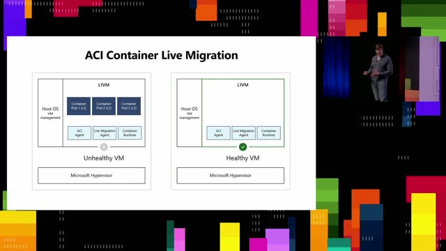
m05sm10s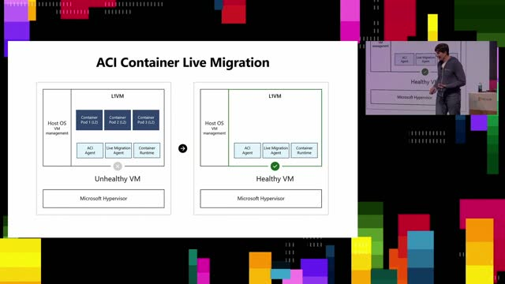
p05s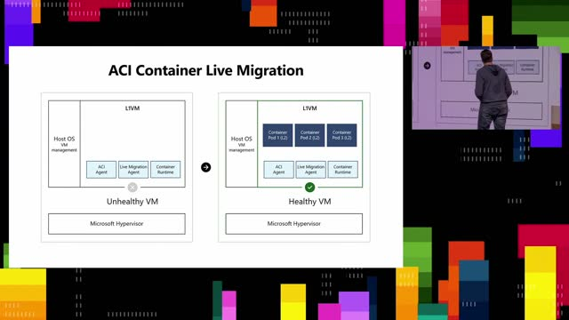
p10s]. - Azure Context Cache (preview) — A storage-account-backed pooled KV cache that raised prompt cache hit rate to ~96% across servers regardless of where a request lands [00:23:42
 m05s
m05s m10s
m10s p05s
p05s p10s].
p10s]. - Memory-snapshotting for container sandboxes — Launched 10,000 sandboxes with a ~2-second average launch time [00:27:33
 m05s
m05s m10s
m10s p05s
p05s p10s].
p10s]. - First-ever confidential VM live migration — Achieved with Intel using a migration TD enforcing policy across servers; not yet in production [00:33:46
 m05s
m05s m10s
m10s p05s
p05s p10s].
p10s]. - Azure Integrated HSM (Manacor) — A FIPS 140-3 Level 3 HSM in every server; releasing an AKV key locally raised signing throughput from ~640 to 18,800 operations/second with no loss of security [00:36:06
 m05s
m05s m10s
m10s p05s
p05s p10s].
p10s].
{kind=link}
{kind=link}
{kind=link}
{kind=link}
{kind=link}
{kind=link}
{kind=link}
{kind=link}
{kind=link}
{kind=link}
{kind=link}
{kind=link}
Topics covered
- Co-design of AI data centers (Fairwater Wisconsin and Atlanta), liquid cooling, and cabling
- DPU/FPGA/ARM-core data-plane offload and agent relocation off the host CPU
- Ethernet vs. InfiniBand and RoCE for GPU back-end fabrics
- Disaggregated inference: prefill/decode pool separation and KV cache mechanics
- Manifold: unified GPU/ASIC/FPGA/CPU pool scheduling with topology awareness
- Hyper-V vs. process isolation as a security boundary
- Confidential computing: hardware enclaves, attestation, and key release policies
- Hardware roots of trust (Caliptra) and in-server key management
- Project Mosaic: micro-LED optical interconnects over imaging fiber
Notable quotes
"We've developed with Open AI and now a growing consortium of partners... a new networking protocol called Multi Multi Path Reliable Connection or MRC."
"We don't consider a process or user mode kernel as a security boundary in Azure. We only consider virtualization... to be a security boundary in Azure."
"That right there, first time ever and it's not in production yet. But you can see that we just literally achieved this in the last few weeks. The first confidential virtual machine live migration anywhere."
Products and tools mentioned
- Azure Boost
- Fairwater data centers (Wisconsin, Atlanta)
- MRC (Multi-Path Reliable Connection)
- MANA (Microsoft Accelerated Network Adapter)
- Azure Container Instances
- Azure Context Cache
- Manifold
- Llama 4 Maverick
- Azure AI Foundry
- Intel SGX; AMD and Intel confidential VMs
- Confidential Containers on ACI
- Caliptra [inferred]
- Azure Integrated HSM (Manacor); Azure Managed HSM; Azure Key Vault
- Project Mosaic
- GitHub Actions, Python in Excel, Horizon DB (running on ACI)
Speakers featured
- Mark Russinovich — CTO, Deputy CISO, and Technical Fellow, Microsoft Azure
- Darby Kosten [inferred] — Microsoft Research Cambridge, presenting the Project Mosaic micro-LED demo remotely
Frames
{kind=link}
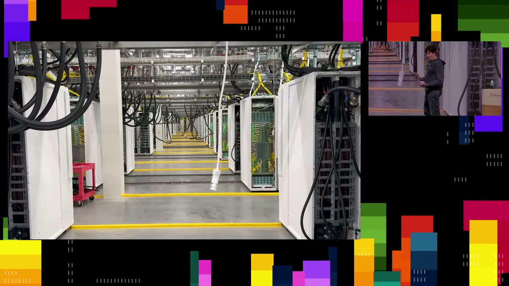
{kind=link}
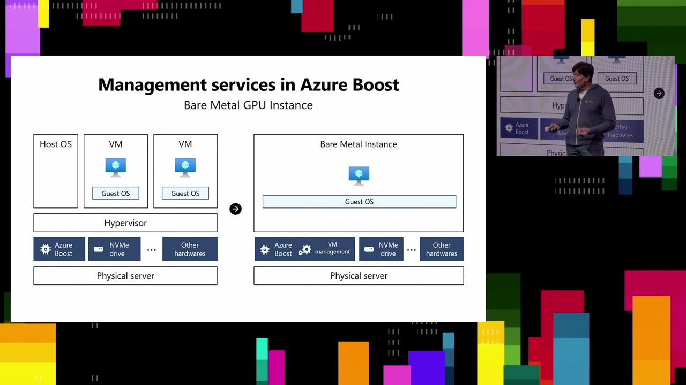
{kind=link}
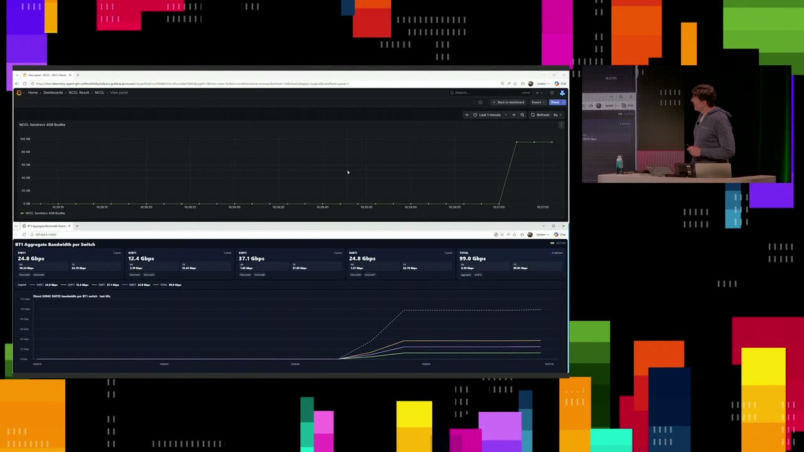
{kind=link}
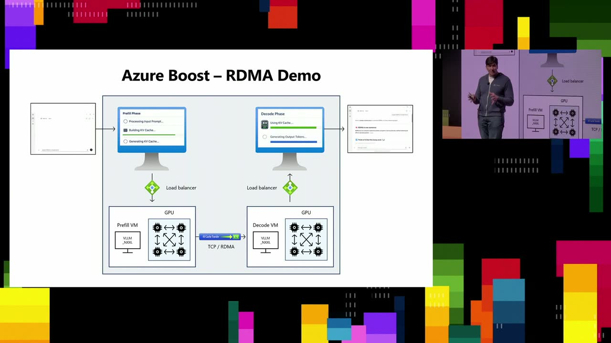
{kind=link}
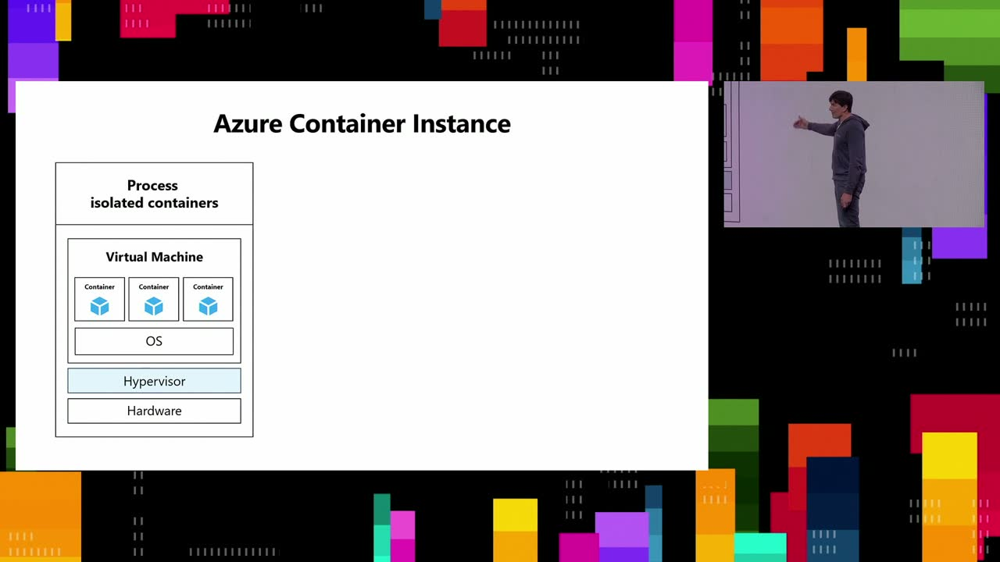
{kind=link}
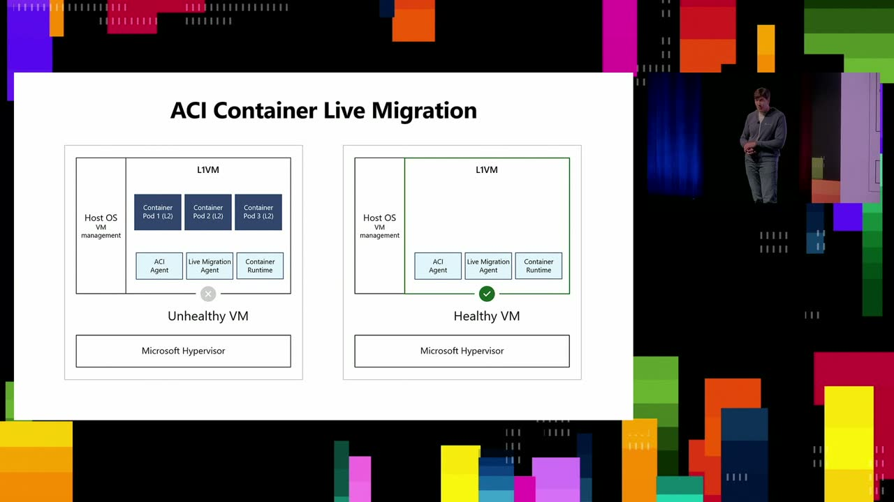
{kind=link}
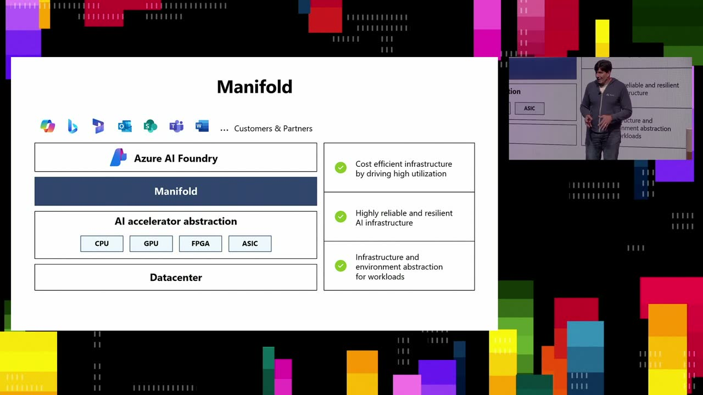
{kind=link}
{kind=link}
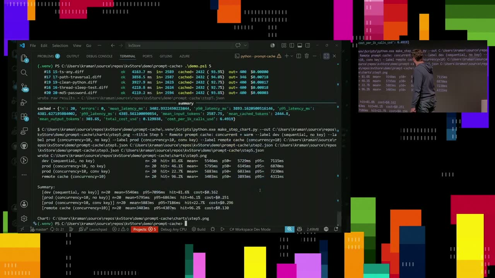
{kind=link}
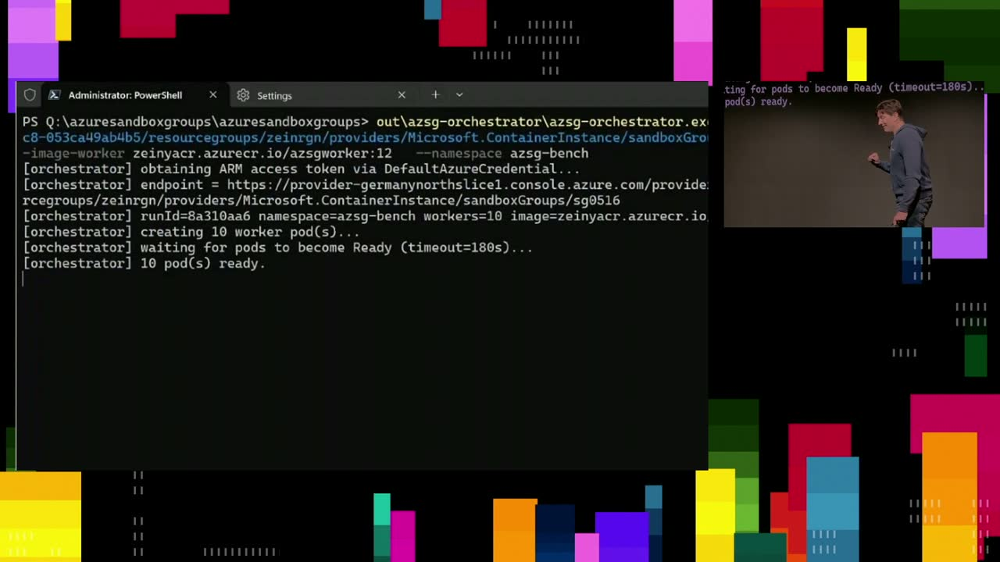
{kind=link}
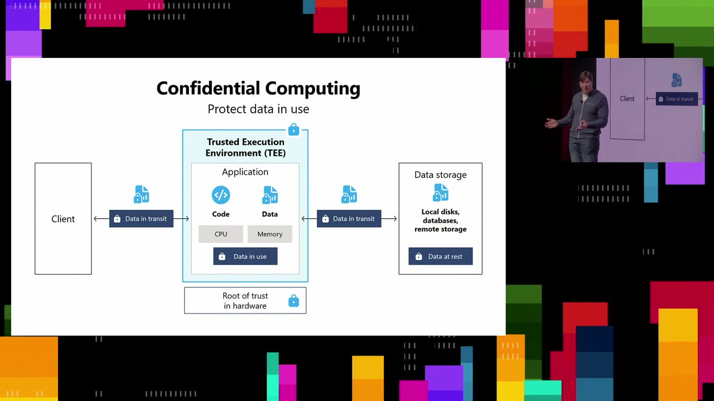
{kind=link}
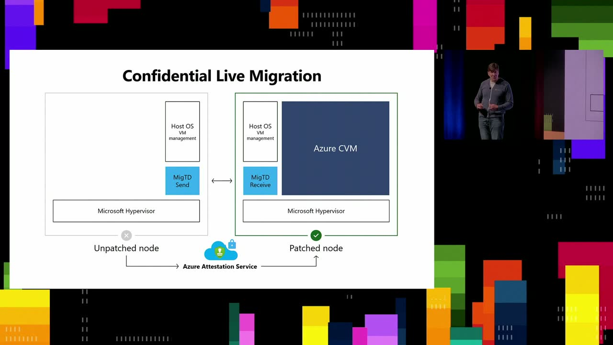
{kind=link}
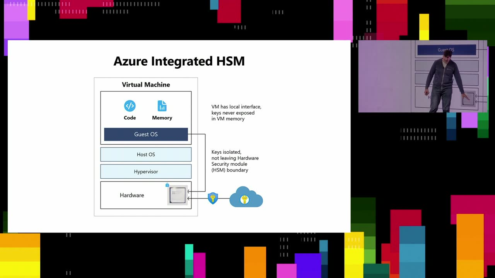
{kind=link}
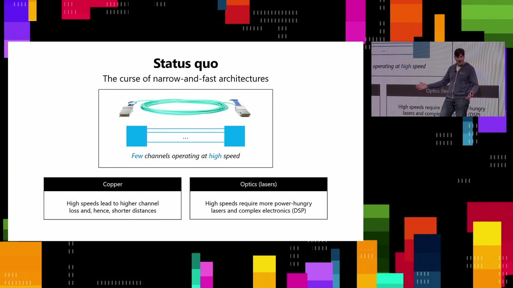
{kind=link}
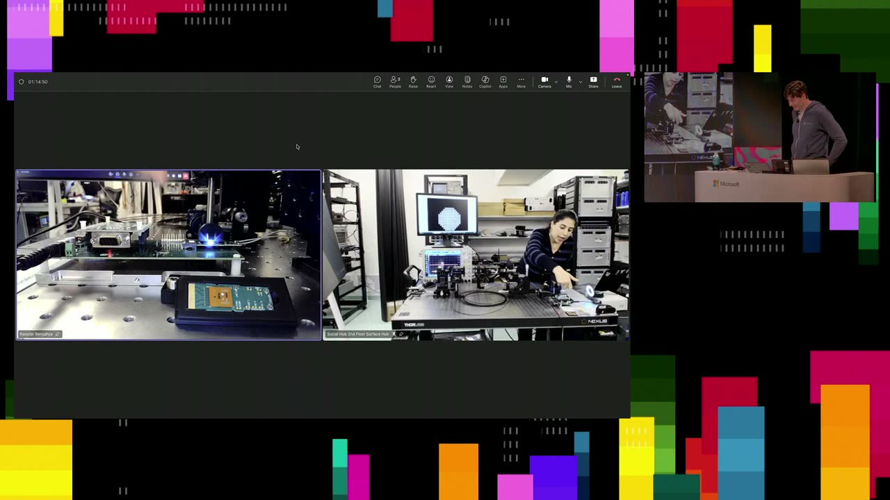
Frames around each announcement
00:03:34
00:11:00
00:15:34
00:23:42
00:27:33
00:33:46
00:36:06
Transcript
Show / hide transcript (54,638 chars)
[00:00:01] Let's try that again. [00:00:02] Good morning everybody. [00:00:04] How's Bill going? [00:00:05] Good. [00:00:07] Well, welcome to Inside Azure Innovations. [00:00:11] My name is Marcus Innovations, I'm the CTO and Deputy [00:00:13] CISA for Azure. [00:00:14] How many people have been to a previous innovations talk? [00:00:18] So quite a few of you. [00:00:19] It's great to see you back. [00:00:20] For those of you that haven't come, this is a [00:00:23] talk where I cover innovations across the spectrum of everything [00:00:28] in the Azure infrastructure from data centers all the way [00:00:32] to cybersecurity and the cyber systems that we've got under [00:00:36] development in Azure. [00:00:38] One of the notes that I make about this is [00:00:40] that I'm showing you things in some cases that haven't [00:00:42] shipped yet, some things that we're working on, some things [00:00:45] that maybe have just shipped. [00:00:47] For things that haven't shipped, we they might not necessarily [00:00:51] ever ship or or ship in the same kind of [00:00:53] view that you see me present them at. [00:00:55] So that's just a caveat and take away, but I [00:00:57] thought it's fun to give you an under the hood [00:00:59] look at what we're doing and what powers the infrastructure [00:01:02] of Azure and Azure innovation. [00:01:04] So let's start with infrastructure. [00:01:06] And you've seen these pictures of the Fairwater data centers [00:01:09] one and, and this is kind of sets a, a [00:01:12] framework for a lot of the innovation that I'll be [00:01:15] showing here, which is innovation powering AI, specifically the Co [00:01:19] design of AI data centers, the core infrastructure and the [00:01:22] software that runs on top of it. [00:01:25] I had a really awesome experience in November. [00:01:28] I got to go visit Fairwater in Atlanta. [00:01:30] These are Fairwater in Wisconsin, Fairwater Atlanta. [00:01:33] The Atlanta site is on the right and I got [00:01:36] to go into it and I thought I'd show you [00:01:38] a quick video tour of it. [00:01:40] Just a few seconds of me walking through it. [00:01:43] And I don't know why that didn't play. [00:01:45] Maybe I need to hit the play button up here. [00:01:50] So this is me looking like Builder Bob walking through. [00:01:53] That's because it's under construction. [00:01:55] It's kind of continuously under construction. [00:01:57] This is the network cabling that connects the top floor [00:02:00] servers and the bottom floor servers that goes up through [00:02:03] trunks. [00:02:03] There. [00:02:03] You can see there's enough cabling to wrap the earth [00:02:06] four times in one of these. [00:02:08] Those are liquid cooling cables being laid there initially so [00:02:12] that servers can be dropped in. [00:02:15] And you can see we got to see one of [00:02:16] these servers on the sled being racked. [00:02:18] These are the cables on the back, the InfiniBand and [00:02:21] Ethernet cables. [00:02:22] And then you can see this is a brake fix [00:02:24] that we got to watch. [00:02:25] This is the liquid cooling plugged into the back of [00:02:27] the racks. [00:02:27] And then I saw this on the tour. [00:02:29] That group had gone ahead of me. [00:02:31] I saw a plug and I plugged it in because [00:02:34] it's like, what's this shouldn't be hanging like that? [00:02:38] And Scott Guthrie got a text literally a few minutes [00:02:41] later saying we've, it looks like we've already powered on [00:02:44] power cell three. [00:02:46] We didn't expect that. [00:02:48] I wanted to take credit, but I thought maybe I [00:02:50] best shouldn't for that. [00:02:53] But inside the data centers themselves, we've got the servers, [00:02:56] of course. [00:02:56] And one of the innovations that we've been developing in [00:02:59] our servers is something called Azure Boost. [00:03:01] Azure Boost is aimed at offloading a lot of the [00:03:04] processing of the data paths for data for storage and [00:03:09] networking off the main server CPUs. [00:03:12] And it does this with an offload card. [00:03:14] We move the data planes off onto that offload card, [00:03:18] We power them with DPU's. [00:03:20] We've got cores on there as well where we put [00:03:23] our agentry. [00:03:24] So we get the agents off the server as well. [00:03:26] And this lets the workload have most of the control [00:03:29] over what's going on on the server. [00:03:32] This Azure Boost Card looks like this. [00:03:34] This is the latest generation of Azure Boost Card that [00:03:36] we've started deploying our data centers. [00:03:38] Here's an actual version of it right here. [00:03:41] And what you can see there, there's little black squares [00:03:44] around the middle, our DRAM, and then the middle is [00:03:47] where the SoC is. [00:03:48] That's where the ARM cores and the DPU and FPGA [00:03:51] are located. [00:03:53] That's where the data plane gets processed and the agents [00:03:55] run. [00:03:57] Now, some of the stats for Azure Boost are pretty [00:03:59] staggering. [00:04:00] You can see here that just in last year, since [00:04:03] the previous generation of Azure Boost that I showed at [00:04:07] last build, we've gone to 20 gigabytes per second of [00:04:10] remote storage. [00:04:11] And that's an increase you can see there of 1.4. [00:04:15] We've gone to 1,000,000 IOPS for remote storage and a [00:04:18] local storage, 36 gigabytes per second. [00:04:21] This is to local NVME and 6.6 million IOPS through [00:04:25] Azure Boost NVME offload storage acceleration. [00:04:29] And then for networking, we've gone to 400 gigabits from [00:04:32] 200 gigabits. [00:04:33] So there was 2 network ports that you saw there [00:04:36] on the card, 200 gigabits each and 400K connections per [00:04:39] second. [00:04:40] It supports. [00:04:41] Those two ports mean that they can go to two [00:04:44] top of rack router switches. [00:04:46] So that means that we can service top of rack [00:04:48] routers or if one fails the complete, we don't lose [00:04:50] complete connectivity to the server. [00:04:52] And it also means that sub second servicing is possible [00:04:55] now on those tours with a sub second impact to [00:04:58] the workloads running on the servers. [00:05:01] We've been deploying this for several years now and we're [00:05:04] over 30% of the fleet is now has Azure Boost [00:05:06] enabled. [00:05:07] Every single server gets an Azure Boost in it. [00:05:09] And then one of the cool innovations that I'll show [00:05:12] you in a little bit is that we support guest [00:05:14] virtual machine RDMA. [00:05:15] So this is basically memory to memory transfers, bypassing the [00:05:19] networking stacks because Azure Boost is facilitating that transport. [00:05:25] Now one of the things that I mentioned is we [00:05:28] get the management services off the server and we put [00:05:31] them on the Azure Boost card and that lets us [00:05:34] have bare metal instances. [00:05:36] We've introduced bare metal instances to in limited access specifically [00:05:41] for open AI and open a is use of that [00:05:44] Fairwater data center. [00:05:46] So the servers and data center, the GPU servers are [00:05:49] bare metal instances. [00:05:50] And I thought I'd show you just a quick demo [00:05:52] of bare metal instances which are going to be coming [00:05:55] as a general purpose offering in sometime in the near [00:05:57] future. [00:05:58] But here you can see we've got a metal instance, [00:06:02] ND144V6. [00:06:04] You can see here we're going to get the IP [00:06:06] address, and then we're going to SSH into it and [00:06:09] actually see that it is a bare metal server because [00:06:12] we're going to look to see if virtualization services are [00:06:16] running and they're not. [00:06:19] And then we're going to look at the PCI bus [00:06:22] using LSPCI and you can see we get lots of [00:06:25] devices. [00:06:25] We're going to scroll to the top and you can [00:06:28] see there's a PCI bridge. [00:06:29] And then you can see the 8 Ethernet controllers that [00:06:33] are connected to the Mellanox in RDMA capable network adapters [00:06:37] that are attached to that for the back end network [00:06:41] that those GPU's talk through to each other. [00:06:45] Now what do they talk, what transport do they talk? [00:06:48] We switched to Ethernet from InfiniBand actually in those Fairwater [00:06:52] data centers. [00:06:53] And instead of using Rocky, which is RDMA over converged [00:06:56] Ethernet, we've developed with Open AI and now a growing [00:07:00] consortium of partners that are collaborating with us a new [00:07:03] networking protocol called Multi Multi Path Reliable Connection or MRC. [00:07:09] And the reason that we developed MRC is that when [00:07:12] you talk about connecting 100,000 GPU's together, that's an incredible [00:07:17] amount of network fabric that those packets are going across [00:07:21] from all of those GPU's. [00:07:23] If you have any congestion or any failure on a [00:07:26] synchronous training job of that size, you're going to lose [00:07:29] a ton of work. [00:07:30] You're going to have to go back to a checkpoint, [00:07:33] restart the training job from where it loft off. [00:07:36] So MRC is designed to be resilient in the face [00:07:39] of these congestion issues or failures because it sprays the [00:07:43] packets across independent network domains called planes. [00:07:47] And therefore when a link gets dropped, it can the [00:07:51] the spraying just happens and rebalances to the planes that [00:07:54] remain available. [00:07:56] And I'll show you a quick demo of that in [00:07:59] action by showing you here. [00:08:04] What we're going to see is that I've got 2 [00:08:07] servers talking to each other over 4 switches. [00:08:11] They're sending 4 gigabyte payloads to each other. [00:08:17] This is 4 gigabytes are going to be packet sprayed [00:08:20] across these. [00:08:21] You can see we're getting roughly 95 gigabytes per second [00:08:25] and that's because we are spraying these across 8 planes [00:08:29] with 12 gigabytes. [00:08:30] So that comes out to 12 gigabytes per plane. [00:08:33] And this is the aggregate bandwidth that we're seeing, which [00:08:37] is 95 gigabytes per second. [00:08:39] This is what we're going to watch because we want [00:08:42] to maintain 95 bits GB or gigabytes per second there, [00:08:44] which is our goal. [00:08:47] We're seeing 4 switches. [00:08:48] You can see how much bandwidth is being spread across [00:08:51] the switches. [00:08:52] There's actually 2 switches at this bandwidth here that you [00:08:55] don't see. [00:08:56] So this is 12/2/20 fours and 136 adding up to [00:08:59] 95. [00:09:00] And now we're going to go kill one of those [00:09:02] switches. [00:09:02] We're going to drop it off of the sending server. [00:09:07] So what it's going to do is now re balance [00:09:09] the spraying across the remaining 3 switches and our goal [00:09:13] is to not see any drop in network bandwidth. [00:09:16] And of course that's exactly what we get. [00:09:18] You can see 95 ish gigabits per second and if [00:09:21] we go take a look at the traffic over the [00:09:23] switches, you can see that one of them went to [00:09:26] zero and then the other one went up to 36 [00:09:28] gigabits per second to compensate for that. [00:09:31] So MRC is what allows us to run these massive [00:09:35] training jobs and has now become the industry standard for [00:09:40] large network topologies. [00:09:44] Now I mentioned RDMAA few times and what I was [00:09:48] showing you was MRC, which is the what Open AI [00:09:52] uses for their training jobs. [00:09:56] And they're doing RDMA of course between the servers in [00:09:59] those training jobs. [00:10:00] But what we want to introduce is to more general [00:10:03] purpose workloads, RDMA through virtual machines. [00:10:06] Now, when you talk between one VM and another VM [00:10:10] through Azure Boost, they could be on different servers. [00:10:15] You're going through these networking stacks. [00:10:16] The application talks to TCIP, which talks to our Mana [00:10:19] driver, the Microsoft Accelerated Network Adapter driver, which is the [00:10:23] Boost Azure Boost network adapter driver. [00:10:26] And then it goes back up and there's a lot [00:10:28] of memory copy operations and a lot of synchronization happening [00:10:32] through that. [00:10:33] With RDMA, you bypass all that. [00:10:35] So the application maps memories basically in the remote system [00:10:40] can drop data right into its own local presentation of [00:10:44] that. [00:10:45] And Azure Boost takes care of sending that and dropping [00:10:48] it in the memory on the other side. [00:10:50] And this completely eliminates a lot of that synchronization as [00:10:53] well as the memory copies and all that software path [00:10:56] that you got through those networking stack. [00:11:00] So I'm going to show you a demo of virtual [00:11:03] machine to Virtual machine RDMA over Azure Boost. [00:11:07] The scenario here is common in AI workloads where you're [00:11:10] doing inference and inference you can break up into two [00:11:14] parts, prefill and decode. [00:11:17] Prefill is taking your prompt and then getting the tokens [00:11:20] from that prompt in the way in the KV cache [00:11:23] populated from that prompt. [00:11:25] And then decode starts to generate new tokens based off [00:11:28] of that system of that prompt. [00:11:30] So it's efficient and now common to split those into [00:11:34] different servers pools. [00:11:35] So one pool for prefill, 1 pool for decode because [00:11:38] they both have different constraints when it comes to memory [00:11:41] and compute. [00:11:43] So here we're going to start this demo of RDMA. [00:11:53] So first we're going to look at the performance over [00:11:55] the TCP IP stack. [00:11:56] So here's the prefiller server using TCPIP. [00:12:01] Here's the decoder server also using TCPIP the way we're [00:12:04] launching it. [00:12:05] And then we're going to go run this VLLM benchmark [00:12:09] that does this prefilled decode load between those two servers. [00:12:17] And then we're going to go take a look at [00:12:18] our RDMA stats, which in the bottom right. [00:12:21] And you're going to see that they don't change as [00:12:23] this workload runs. [00:12:23] There's 460 send requests. [00:12:25] Just keep your eye on that one. [00:12:27] But then if you take a look at the performance, [00:12:30] the token throughput, which is what we really want is [00:12:33] about 3400. [00:12:34] The median time to 1st token, which is another important [00:12:38] stat for inference is 123 thousand. [00:12:41] But when we switch over to RDMA and use the [00:12:44] MANA link for that, you can see there's the F1 [00:12:47] verbs. [00:12:48] Device name is MANA 0. [00:12:51] We do the same thing on the D code server [00:12:55] MANA 0. [00:12:57] And then let's go take a look at the stats [00:12:59] and you can see 460, but this is going to [00:13:01] change now because we're running the RDMA test and it [00:13:04] changed to five O 6 because we sent a whole [00:13:06] lot of packets now over to RDMA. [00:13:08] And then we've almost doubled the throughput to 7637. [00:13:12] And then you can see our meantime to 1st token [00:13:16] has dropped to just 47,000 milliseconds. [00:13:19] So that's the performance benefit of RDMA that we're deploying [00:13:23] and using in our inference clusters behind Foundry powered by [00:13:27] Azure Boost. [00:13:29] OK, so let's take a look at our core now. [00:13:32] So that's kind of Fairwater infrastructure and some of the [00:13:35] networking behind it. [00:13:36] Let's go take a look at the core. [00:13:38] And I'm this is one of the sections that I [00:13:40] get very excited about because the future is serverless and [00:13:44] I've been saying this for a long time. [00:13:46] If you come to previous Inside Azure innovation talks, even [00:13:49] going back 10 years, I've been saying serverless is the [00:13:52] future. [00:13:52] Will serverless as the future is really arriving now with [00:13:56] Azure container instances, which Azure container instances. [00:14:00] The idea here is that we've got typically when it [00:14:03] comes to containers, you think about containers the way they [00:14:06] started, which is process isolated containers. [00:14:09] So they're using the operating system primitives to try to [00:14:11] keep them separate from each other. [00:14:13] But there's a problem with that. [00:14:15] We don't consider a process or user mode kernel as [00:14:19] a security boundary in Azure. [00:14:21] We only consider virtualization with a very tight connection between [00:14:26] small connection between the server and the the host to [00:14:30] be a security boundary in Azure. [00:14:33] So with Azure Container Instances, we isolate those containers with [00:14:38] Hyper V, and this is nested hypervisor here inside virtual [00:14:42] machine with the containers on them. [00:14:45] One of the things I'm going to show you in [00:14:47] a little bit is where we're going with this, which [00:14:48] is direct virtualization. [00:14:49] So I'll save a description of that. [00:14:52] But what I want to show you is we're making [00:14:54] a ton of progress in adopting Azure Container Instances throughout [00:14:57] all of not just Azure, but Microsoft Services. [00:15:01] I'm sure that if you take a look at this, [00:15:03] you can see some service that you've been using, which [00:15:05] means you're indirectly using Azure Container Instances. [00:15:07] Whether for example, GitHub Actions is now running on Azure [00:15:10] Container Instances. [00:15:12] You can see Python And Excel running on Azure Container [00:15:15] Instances Horizon DB, which you might have gone to sessions [00:15:18] about here at Build running on Azure Container Instances. [00:15:22] So one of the things that we've been doing is [00:15:25] trying to make container instances more efficient and also support [00:15:29] more scenarios and make it so that you never need [00:15:32] to do process isolation. [00:15:34] One of those is taking out the virtualization overhead. [00:15:37] And this is what we call direct virtualization. [00:15:40] It's putting the containers right on the the servers as [00:15:44] peers to the management virtual machine. [00:15:48] We call this the parent partition or layer one virtualization [00:15:52] host. [00:15:53] And these are layer 2 virtualization host or child VMS [00:15:57] that are simply hosting individual containers or pods. [00:16:02] And this gives us that strong hostile multi tenant isolation [00:16:05] for container instances. [00:16:08] Now one of the other Azure container instances of cells [00:16:13] now runs on top of direct 1L1 virtualization or direct [00:16:17] virtualization. [00:16:19] We're we're migrating our entire fleet over to direct virtualization. [00:16:23] This will probably take a year or two to migrate [00:16:26] the whole fleet, but this is something that was going [00:16:28] to give us a lot of performance and efficiency benefits. [00:16:32] Now we want to make containers have all of the [00:16:35] same capabilities of virtual machines, all of the same abilities [00:16:39] to attach network devices and storage devices. [00:16:43] One of the benefits you get out of a virtual [00:16:46] machine today on any hyper scaler including Azure is minimal [00:16:49] downtime when the server needs to be serviced or the [00:16:52] server is going unhealthy. [00:16:54] And we recognize that ahead of time and that is [00:16:57] with live migration. [00:16:59] What's been missing with containers is support for live migration. [00:17:03] So I want to show you the first public demo [00:17:06] of container live migration in Azure here, where we can [00:17:10] take a bunch of containers and move them from 1:00 [00:17:13] server over to another server. [00:17:20] So here I've got a container that's running on one [00:17:24] pool of servers, and here's another pool of servers over [00:17:28] here that we're going to migrate it to. [00:17:31] So this is our live migration for container instances. [00:17:35] You can see this is still under development, which is [00:17:37] why we're using these command lines here. [00:17:41] And we've got this running over on dev box 6, [00:17:44] server dev 6, and we've got this container workload. [00:17:48] It's simply spitting out a tick every second. [00:17:51] You can see we're up to tick 695 and the [00:17:53] migration now has kicked in and that container is no [00:17:55] longer running on that server, which is why that stopped. [00:18:00] Now if we go over and take a look at [00:18:02] the other server, it's migrated to dev 1 and we [00:18:06] look at what's running in it. [00:18:08] You can see that there's our hello world there and [00:18:11] if we could take a look at what's running inside [00:18:14] of that, you can see there is the file that [00:18:17] it's been dropping those ticks into. [00:18:19] We're all already way up to 7055. [00:18:21] So let's go take a look and make sure that [00:18:24] 695 was in there and we didn't have any kind [00:18:26] of gap. [00:18:28] So we're going to go to a cat and scroll [00:18:32] back up and there's it is 695 right there. [00:18:36] So no gap at all. [00:18:39] So container live migrating from 1:00 server to another on [00:18:42] top of Azure container instance. [00:18:44] By the way, feel free to clap at any time. [00:18:51] All right, let's switch over to talking a little bit [00:18:54] about AI. [00:18:54] I know that there's AI fatigue, but I think we're [00:18:57] doing some cool stuff with AI that I'd like to [00:18:59] share with you. [00:18:59] And one of those is talking a little bit about [00:19:02] what powers all of Microsoft's own inference and own training, [00:19:06] and that's a system called Manifold. [00:19:09] Manifold's idea is to treat all our pool of GPU's [00:19:12] as one pool to do priority based deployments of workloads, [00:19:16] to understand the topologies of AI based inference and training [00:19:21] workloads to most efficiently use that GPU capacity and also [00:19:25] abstract the underlying hardware. [00:19:27] You can see that it supports ASICS, it supports GPUs, [00:19:31] Fpgas, and even CPUs. [00:19:33] And more and more we have models that consist of [00:19:36] CPU portions of the model and GPU portions of the [00:19:40] model, including models that actually have mini models inside of [00:19:44] them. [00:19:45] Like they might have an embedding model embedded in them, [00:19:48] they might have a virtual large language, visual large language [00:19:52] model embedded within them if they're a multi modal model. [00:19:55] And so these topologies are getting more complicated. [00:19:59] Now what we want to do is bring this power [00:20:02] of Azure container instances in this isolation to workloads like [00:20:07] this on top of direct virtualization where we can put [00:20:10] CPU containers inside of its own Hyper V isolated container [00:20:15] and the AI model components those containers in their own [00:20:19] separate ones too, so they don't interfere with each other. [00:20:24] And they get direct access to hardware at the same [00:20:27] time. [00:20:27] And this is a benefit of direct L1 direct virtualization [00:20:31] is we can assign the GPU to a virtual machine. [00:20:34] That virtual machine can then create a sub virtual machine, [00:20:38] one of these L twos and then give the GPU's [00:20:41] that it's got over to that container and then it [00:20:44] has direct access to that hardware. [00:20:47] So let me show you this demo of Manifold. [00:20:55] And what we're going to see here is if I [00:20:58] get the nodes in this cluster, we're going to go [00:21:00] take a look at one of those nodes and get [00:21:03] the pods in the node. [00:21:05] And there's one pod in there which is a Llama [00:21:11] 4 server. [00:21:12] And there's another one which is a metrics server. [00:21:14] One of them is a GPU based 11 is the [00:21:16] CPU based one. [00:21:17] When we go take a look inside the pod that's [00:21:20] got the GPU, the llama model in it, you can [00:21:22] see it's got the GPU is visible to it. [00:21:25] It's got a whole bunch of RAM visible to it [00:21:27] and it's got a whole bunch of processors assigned to [00:21:30] it and you can see the NVIDIA SMI command shows [00:21:33] us that it actually has those GPU's available to it. [00:21:36] When we go take a look at the CPU pod [00:21:39] sitting right next to it on the same server, you [00:21:41] can see that it's got almost no memory. [00:21:44] It's only got 2 processors and it's got no GPU's [00:21:47] attached to it. [00:21:49] And just to prove to you it works, we're going [00:21:52] to go take a look at this cat video and [00:21:54] send this for inference to that GPU pod sitting there [00:21:57] with direct access to GPU's, the Llama 4 Maverick model [00:22:01] there and then successfully do an inference there. [00:22:06] The the point being proven here that we've got CPU [00:22:09] pods completely isolated from GPU pods directly attached to the [00:22:13] physical server hardware because of direct virtualization. [00:22:25] Now we're also not just optimizing the compute, we're also [00:22:29] optimizing the way that inference works in terms of KV [00:22:32] caches, which is the KV cache is effectively the state [00:22:36] of the LLM. [00:22:37] And you can't do decoding without efficiently without having a [00:22:41] KV cache of the process, which it represents the processing [00:22:44] of all the previous tokens in the prompt. [00:22:48] When you interact with an LLM, you do so typically [00:22:50] using turns. [00:22:51] And so you might have turn 1 where you just [00:22:53] have a system prompt. [00:22:54] Let's say you're doing a PR diff because you're doing [00:22:58] development and you interrupt and engage in an interaction with [00:23:02] copilot on that PR diff. [00:23:04] And what that means is that you're extending the prompt [00:23:08] effectively your specific prompt. [00:23:11] In an ideal case, you don't just want to cash [00:23:13] the system prompt. [00:23:14] And this is what a lot of AI frameworks let [00:23:16] you do is they say, hey, cash this for me [00:23:18] and then I'm not going to have to pay the [00:23:20] cost for decoding this again or pre filling it. [00:23:23] But what you really want is the whole thing to [00:23:26] be cashed so that if your workload moves, your inference [00:23:29] moves from one GP to another, one server to another, [00:23:31] that you're not repaying this price. [00:23:35] And we can only do this if we've got a [00:23:38] cash that sits all the way behind all of the [00:23:41] servers. [00:23:42] So this is something that we've got coming out in [00:23:45] preview now called Azure Context Cache. [00:23:46] The idea here is that Azure Context Cache behind it [00:23:50] has a storage account, and that storage account is where [00:23:54] we're caching the KV state for all of the inference [00:23:58] requests. [00:23:58] So regardless of what server they go to, if they're [00:24:02] the cache, the prompts not there, the KV isn't there. [00:24:06] We can look it up in the cache and fetch [00:24:08] it in and not have to decode that again, saving [00:24:11] time and money. [00:24:13] So let's go take a look at that as your [00:24:15] context cache in action. [00:24:19] So here we're sending concurrency level 1. [00:24:24] We're sending a bunch of queries into the system, all [00:24:27] with the same system prompt. [00:24:28] And you can see that we had all of those [00:24:30] cached. [00:24:31] The cache hit rate was 81% because after the first [00:24:33] request goes to the server, the next one's likely going [00:24:36] to have that system prompt already cached in it. [00:24:40] But when we do a concurrency level of 10, they're [00:24:42] going to get sprayed across servers and our cache hit [00:24:44] rate actually goes down because now sometimes the request is [00:24:47] landing on a server without the system prompt. [00:24:50] So a lot of systems have you set this cache [00:24:52] key unique to try to pin a conversation on a [00:24:54] particular server, an endpoint. [00:24:57] The kit rate actually drops there because every conversation gets [00:25:01] mapped to a different server intentionally where the system prompt [00:25:04] might not have already shown up. [00:25:06] So the first hit there is always the first query. [00:25:09] There is always going to be a miss. [00:25:11] But when we set the set the prompt cache, you [00:25:15] can see that the prompt cache rate hit rate is [00:25:19] going to go up. [00:25:21] Where? [00:25:21] Where did the demo go here? [00:25:23] Went up to 96% with the remote cache here. [00:25:26] 96.2% is the hit rate here. [00:25:28] And that's because no matter what server the query lands [00:25:32] on the prompt is the KV cache for that prompt [00:25:35] is going to be fetched from remote cache if it [00:25:39] wasn't there. [00:25:40] So transparently behind the scenes, this prompt cache using Azure [00:25:44] storage to go and spread out the KV cache across [00:25:47] the servers, effectively making the servers have a pool cache [00:25:50] rather than individual server based caches, which is going to [00:25:53] improve hit rate, which is going to save money so [00:25:56] you're not having to pay for the the the prefill [00:25:59] on the system caches every time you have a mess. [00:26:03] All right, so let's take a look at the next [00:26:06] cool innovation with and I've got a, it's like an [00:26:10] ACI theme talk because this is one of the cool [00:26:13] things about ACI. [00:26:15] When you talk about containers, you're talking about layers and [00:26:18] images. [00:26:19] When you talk about virtual machines, you're talking about full [00:26:22] blown virtual machine images. [00:26:24] Now when you talk about container sandboxes, you're typically talking [00:26:28] about something that is very bespoke, kind of a custom [00:26:31] image and it's very small and lightweight and this is [00:26:34] what you want to be extremely fast. [00:26:37] Now one of the ways to get a fast startup [00:26:39] for a container image, which you want with these for [00:26:42] these agents to be able to say, I'm going to [00:26:44] go write a Python script and run it. [00:26:46] I'm going to go create a little HTML site and [00:26:49] and integrate on it is you want the startup to [00:26:52] be in close to instantaneous when it comes to containers. [00:26:56] You can get startup times in the 522nd range depending [00:27:00] on what the OS is, but we want literally thousands [00:27:03] of these things to be able to start simultaneously and [00:27:07] to start very quickly off of the same base image. [00:27:11] The way we do that is with memory snapshotting. [00:27:14] So we actually start the container, snapshot its memory, and [00:27:17] then if you get a request for the same container, [00:27:20] we simply map the memory and we skip all the [00:27:22] initialization and map it right into a running container box. [00:27:26] So let me show you one of the, I think [00:27:29] my favorite demo of this, which is how would you [00:27:33] like to see 10,000 container sandboxes launch? [00:27:39] OK, because, because if the answer is yes, that's the [00:27:42] rest of the session. [00:27:44] I'm just kidding. [00:27:45] No, I'm just kidding. [00:27:47] What I'm going to show you is that that we [00:27:49] can do this incredibly quickly. [00:27:51] So I've got 10 workers launching 1000 of these container [00:27:55] sandboxes each, and we've got a little animation to show [00:27:59] you the progress of those launches here. [00:28:02] So here we go, create 10 worker pods. [00:28:10] Here we go. [00:28:12] So each one is going to add 1000. [00:28:15] This represents 1000. [00:28:17] You can see them launching few down here. [00:28:21] Left. [00:28:23] Boom, done. [00:28:25] 10,000 container sandboxes, 2 average container sandbox launch time 2 [00:28:34] seconds. [00:28:37] So not just speed but scale at the same time. [00:28:40] So this is, like I said, one of the really [00:28:42] cool demos. [00:28:43] And so you're going to see the agent agent sandboxing [00:28:47] land on top of Azure container instance. [00:28:51] All right, let's go into our last section now and [00:28:54] talk about or second to last section and talk a [00:28:56] little bit about security. [00:28:58] And one of the exciting things for me about security [00:29:02] is the evolution of something called confidential computing. [00:29:07] How many people have heard of confidential computing? [00:29:08] Just so quite a few of you, For those of [00:29:10] you that haven't heard of confidential computing, it's the easiest [00:29:14] way to think about it is in the context of [00:29:16] how your data gets protected. [00:29:18] And for a long time now, everybody encrypts their network [00:29:23] traffic. [00:29:26] Over the last 20 years or so, it went from [00:29:28] every, you know, every now and then you'd run into [00:29:31] a site with SSL. [00:29:32] And now every single site, every single network connection has [00:29:35] to have TLS on it. [00:29:37] Then the other part of protecting is while it's at [00:29:41] rest, and this is where it's stored on, on disk. [00:29:44] You want to have that encrypted too. [00:29:46] So if the storage it's accessed outside of the protection [00:29:49] of the logical protections of the workload on top of [00:29:52] it that the data is useless. [00:29:55] And we not only have now in cloud, we didn't, [00:29:57] we started with node data encryption at rest and now [00:29:59] we've got server side encryption. [00:30:01] We also have customer manage key where you can bring [00:30:03] your own encryption and have double layer encryption of data [00:30:05] at rest. [00:30:05] But what's been missing largely is protecting the data while [00:30:09] it's in use, because when that data gets decrypted on [00:30:12] the server or pulled off the disk in clear text, [00:30:15] it's sitting in there on the server, maybe inside of [00:30:18] a virtual machine, but still in the server environment. [00:30:22] And what can access that data includes everything from the [00:30:26] hypervisor to the admins to the host software to a [00:30:29] malicious hacker that might penetrate the infrastructure. [00:30:34] All of those can get access. [00:30:36] And even in your own applications, you want to keep [00:30:39] maybe your own operators away from that data and only [00:30:42] have the compute that needs to have access to that [00:30:45] data, have access to that data. [00:30:48] That is confidential computing. [00:30:49] Now one aspect of confidential computing that is not just [00:30:53] this protection of of that data in a hardware enclave [00:30:56] where none of those things can get inside of it, [00:30:59] is that the hardware also can measure what's inside the [00:31:03] enclave. [00:31:04] And that measurement is called an attestation. [00:31:06] And some a code inside that enclave can get asked [00:31:09] the hardware for a quote. [00:31:11] What is the attestation presented to A relying party, which [00:31:15] is typically a key management service that has a policy [00:31:19] on it that says only release this key to an [00:31:21] enclave of this hardware type with the security version number [00:31:26] on it with this configuration of code. [00:31:29] And at that point the key gets released, it's encrypted [00:31:32] to the enclave, the coding the enclave, the coding the [00:31:34] enclave decrypts the key and then can start to process [00:31:37] the data in the clear. [00:31:39] And everybody knows that it's being protected with that hardware [00:31:43] isolation that is confidential computing. [00:31:45] We've been working on enabling confidential computing in Azure for [00:31:50] over a decade, starting with Intel SGX servers in the [00:31:54] in the data center and now virtual machines from AMD [00:31:57] and Intel in the data center. [00:32:00] And our portfolio is the largest of any hyper scaler [00:32:03] when it comes to confidential computing services, confidential computing container [00:32:07] offerings like confidential containers on ACI as well as the [00:32:10] hardware infrastructure underneath it. [00:32:14] Now one of the, and I talked before about live [00:32:17] migration and live migration is one of those things that [00:32:21] allows us to run the fleet efficiently because we can [00:32:24] move workloads around to reduce fragmentation. [00:32:28] We can also make customer workloads more reliable because we [00:32:31] can move them if we see a server is going [00:32:33] to fail. [00:32:34] We can also move them around if we need to [00:32:36] service a host in an impactful way and that means [00:32:39] that the customer's workload is not as impacted by that [00:32:42] servicing operation. [00:32:44] It is a fundamental requirement of a hyper scale cloud [00:32:48] to have live migration and this is unfortunately been one [00:32:51] of the missing gaps in confidential computing offerings is lack [00:32:55] of live migration. [00:32:57] So we've been working deeply with Intel on confidential live [00:33:02] migration. [00:33:03] And the way that works is you have a confidential [00:33:07] virtual machine here on one server, we've got something called [00:33:11] a migration TD, which is a partition. [00:33:14] Effectively think of it as a confidential partition that is [00:33:17] also measured as part of the virtual machines measurement. [00:33:21] And that the receiving side has a policy that's and [00:33:24] the sending side has a policy that says I will [00:33:27] only migrate the contents of this virtual machine to another [00:33:30] server with a MIG TD that is approved for this [00:33:33] virtual machine. [00:33:35] So effectively extending the confidential trust boundary between 2 servers, [00:33:40] adhering to policy that is being enforced with the confidential [00:33:44] computing hardware. [00:33:46] I'm going to show you for the first time ever, [00:33:49] a confidential virtual machine being live migrated from 1:00 server [00:33:53] to another. [00:33:53] This is the first time ever this has been shown [00:33:56] publicly. [00:34:00] So here we have one server here, Hyper V Manager. [00:34:02] You can see a lot of you familiar with it. [00:34:04] There's our CVM, here's the other server manager on the [00:34:08] other side. [00:34:09] You can see no virtual machines there. [00:34:11] You can see there's our MIG TD that we have [00:34:13] in this virtual machine, and here we're looking at the [00:34:17] output of RDP into that virtual machine on Server 1, [00:34:20] and you can see it's pinging every second as typical [00:34:23] in a live migration demo. [00:34:26] Now we started migrating this virtual machine. [00:34:28] You can see this is going to take a while, [00:34:30] so we're going to speed it up a little bit [00:34:31] because there's a large virtual machine with a few gigabytes [00:34:34] of RAM. [00:34:36] You can see this, the TD info attestations that are [00:34:39] happening that we've got printed out and then boom, this. [00:34:42] The CVM just moved and it's on the other side, [00:34:45] which is why we saw that RDP connection die because [00:34:48] it's connected to the IP address and that on that [00:34:51] first machine. [00:34:52] But that right there, first time ever and it's not [00:34:55] in production yet. [00:34:57] But you can see that we just literally achieved this [00:35:00] in the last few weeks. [00:35:01] The first confidential virtual machine live migration anywhere. [00:35:11] Now the next thing I'm going to show you is [00:35:12] something that I also think is really, really cool. [00:35:16] And this is something else that Microsoft has pioneered. [00:35:20] We've been working on hardware, hardware based roots of trust [00:35:23] for a while. [00:35:24] We've got something called Calyptra that we donated to the [00:35:26] Open Compute Project. [00:35:27] It is our root of trust that we deploy in [00:35:29] every single server. [00:35:31] But when I was working with the architects, security hardware [00:35:36] security architects in Azure and thinking, you know, what we're [00:35:40] missing is not just a root of trust, but we [00:35:43] need key management inside of our hardware that we put [00:35:47] into every server. [00:35:49] Because what that will allow us to do is keep [00:35:53] keys protected with hardware throughout their whole life cycle, never [00:35:57] have them exit the hardware trust boundary. [00:36:01] And so we developed something internally called Manacor, but publicly [00:36:06] we announced it last late last year as Azure integrated [00:36:10] HSM because it's effectively an HSM sitting there inside of [00:36:14] every single server. [00:36:16] And we've been deploying these now into every single server [00:36:19] in Azure. [00:36:21] What this allows is a key to be released with [00:36:26] policy from an actual HSM. [00:36:29] So like Azure Manage HSM or Azure Key Vault can [00:36:33] have a policy on it that will release the keys [00:36:37] into Azure integrated HSMS. [00:36:39] And Azure integrated HSMS are FIPS 140 Level 3, FIPS [00:36:43] 143 Level 3 certified, just like the HSMS behind Managed [00:36:48] HSM and Azure Key Vault. [00:36:51] And so that means that the key remains inside of [00:36:54] a FIPS 143 Level 3 boundary from the HSM to [00:36:57] the server and they can be accessed for operations directly [00:37:01] from that virtual machine because we map it that hardware [00:37:05] into the virtual machine. [00:37:09] Let's go see a demo of that and the benefits [00:37:13] that you get out of that using a simple scenario, [00:37:17] which is I want to sign a bunch of payloads [00:37:21] using my AKV key. [00:37:23] So what I've got here is a policy that allows [00:37:27] that key to be transported into Azure integrated HSM. [00:37:31] What I'm going to do first is sign 5000 * [00:37:35] / 32 threads A payload using Azure AKV where the [00:37:39] key never released exits the HSM. [00:37:42] And you can see because we're sending all these operations [00:37:45] to the HSM, we get about 640 operations per second. [00:37:49] Now we released that key into the local Azure integrated [00:37:53] HSM. [00:37:53] We can perform those operations directly on it. [00:37:56] And you can see that our throughput went to 18,800 [00:38:00] signing operations per second and we lost no security in [00:38:04] the process. [00:38:06] And so this is the future of data center infrastructure [00:38:11] and security for keys. [00:38:13] The future we're moving to is one with confidential computing [00:38:17] where keys, and that's going to end up being keys [00:38:20] for everything, keys for your. [00:38:22] Any of these services, including the services that agents are [00:38:25] talking to are going to be protected with hardware throughout [00:38:28] their entire life cycle so they can never be stolen. [00:38:31] And that's a very exciting future. [00:38:39] All right, we've got one last thing to show and [00:38:42] this is very experimental, but I like to end with, [00:38:45] hey, this is where we're looking speculatively. [00:38:48] This is Microsoft Research work that is happening may or [00:38:52] may not be ever productized, but it looks really promising [00:38:56] and it's really would be a huge if we were [00:38:58] able to make this happen. [00:39:01] And the idea here is that if you take a [00:39:04] look at network communications, network networking inside of a data [00:39:08] center, it's typically been over copper. [00:39:12] And the problem with copper is very lightweight, it's very [00:39:16] cheap, very reliable, but the maximum distance is it can [00:39:19] you can talk to over copper without loss is about [00:39:23] two meters. [00:39:24] And of course, 2 meters is not much distance in [00:39:27] the data center. [00:39:27] You really want to connect, especially if you move towards [00:39:31] disaggregated devices and computing where you want GPUs over here [00:39:35] and you want servers over here is that you want [00:39:38] a very high speed, high bandwidth interconnect and that's typically [00:39:42] not copper. [00:39:43] Now what a lot of people are moving towards is [00:39:45] optics and optics with lasers. [00:39:47] The problem with lasers is that they're very high-powered, so [00:39:50] they generate a lot of heat, which makes them very [00:39:53] expensive. [00:39:55] So what we've been exploring is something called Project Mosaic. [00:40:01] Now, one of the things with this mechanisms that I [00:40:04] just showed you is that there's lots of fiber or [00:40:07] there's just a few fibers. [00:40:08] They're all very high bandwidth and high speed. [00:40:11] What we're trying is using many channels, operating at low [00:40:16] speed using standard LED technology, micro LE DS, the kind [00:40:20] of LE DS that are being. [00:40:23] Product ties right now for next generation VR glasses, for [00:40:28] example, goggles as well as cameras. [00:40:31] These things projecting those LED lights over fibers inside of [00:40:36] a cable and then having them read with standard silicon [00:40:41] camera sensor arrays. [00:40:43] So the beauty of this approach is that these are [00:40:46] basically commercial technologies that are scaling because of other economic [00:40:51] factors outside of what we want to take advantage of [00:40:54] it for it. [00:40:55] So we kind of kind of ride on the back [00:40:57] of this technology, but deploy it in our data centers. [00:40:59] So I'm going to show you for the first time [00:41:03] ever with a live feed from our Microsoft Research Cambridge [00:41:07] lab transmission over one of these LED cables. [00:41:11] So let's go and switch here to Microsoft, Cambridge and [00:41:20] Qatar. [00:41:21] Good to see you. [00:41:22] Hi. [00:41:22] Hello, Mark. [00:41:23] Good to see you. [00:41:23] Hello everyone. [00:41:24] Actually I'm Qatar. [00:41:25] I'm from Microsoft Research Cambridge. [00:41:28] I'm here in the lab holding one of those tables [00:41:31] with mine for LED. [00:41:33] Then what I want to show you exactly is what [00:41:36] is inside and how this is being tested in the [00:41:39] lab before it goes into Microsoft data centers. [00:41:42] So if you open this app, this is what you're [00:41:46] going to see, a small PCB with the yellow area [00:41:50] here, which we call the package. [00:41:52] And on top of that we have the tiny array [00:41:56] of micro LEDs and photodetectors, and underneath we have the [00:42:01] CMOS chip that controls everything. [00:42:04] And actually this small PCB is being tested here in [00:42:07] the lab using the evaluation board. [00:42:10] The big PCB that you see there and the green [00:42:13] light coming up is actually coming from hundreds of micro [00:42:17] LEDs and couplet to this imagined fiber using this optical [00:42:22] Kepler. [00:42:23] Actually after 10s of meters of transmission over this imagined [00:42:28] fiber, here we are at the receiver side and the [00:42:33] screen here shows the output spaces of the fiber. [00:42:37] And actually this fiber itself has more than thousands of [00:42:41] cores and each of these micro LED's actually is coupled [00:42:45] to more than one core, which makes the alignment much [00:42:49] more easier. [00:42:50] And actually in a real operation world, all this micro [00:42:55] LED will be on and flashing at high speed billions [00:42:59] time per second, and the human eye will not be [00:43:03] able to distinguish this. [00:43:05] So basically to make it concrete and to show you [00:43:08] that we can individually control each of these micro LEDs, [00:43:12] I'm going to ask you Mark to pick any letter [00:43:16] or a number from zero to 9 and I can [00:43:18] display it. [00:43:19] Through you OK, awesome to this kind of prove that [00:43:21] it's live. [00:43:22] How about a letter? [00:43:23] Somebody shout out a letter that we want to see [00:43:26] ZZ. [00:43:26] All right, let's do ZZ. [00:43:29] OK, OK, so here you can see that we are [00:43:32] switching off some of the micro LEDs and each of [00:43:37] these flowers here are one micro LED that can be [00:43:41] modulated as Gigabit per sentence. [00:43:45] So let's wait for the letter Z to show. [00:43:52] Yeah. [00:43:55] Z Demo. [00:43:58] And I'm going to hand it back to. [00:44:03] You all right, Thanks. [00:44:04] That was awesome. [00:44:04] Thanks for Qatar. [00:44:05] Thank you. [00:44:09] OK. [00:44:09] Well, that brings us to the conclusion of the session. [00:44:13] And what I hope you saw was a lot of [00:44:15] innovation happening at all layers of the the stack from [00:44:19] the hardware to the data centers to the serverless offerings [00:44:23] to GPU's, prompt prefetching inference and then a look at [00:44:26] the future and what we were going with networking inside [00:44:30] the data center. [00:44:31] If you like this, please fill out an evaluation form. [00:44:34] Let me know if you didn't, you can go ahead [00:44:36] and skip that. [00:44:36] And I hope you, I hope you have a great [00:44:39] build and I hope to see you this afternoon with [00:44:42] Scott. [00:44:42] We're going to have a fun session on the future [00:44:44] of software engineering. [00:44:45] So I'll see you then.